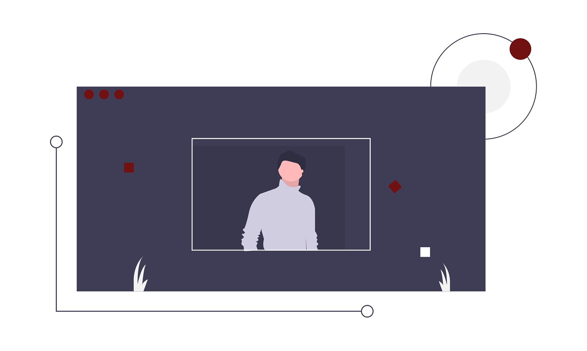

-Sejarah C++
Tahun 1978, Brian W. Kerninghan & Dennis M. Ritchie dari AT & T Laboratories mengembangkan bahasa B menjadi bahasa C. Bahasa B yang diciptakan oleh Ken Thompson sebenarnya merupakan pengembangan dari bahasa BCPL ( Basic Combined Programming Language ) yang diciptakan oleh Martin Richard.
Sejak tahun 1980, bahasa C banyak digunakan pemrogram di Eropa yang sebelumnya menggunakan bahasa B dan BCPL. Dalam perkembangannya, bahasa C menjadi bahasa paling populer diantara bahasa lainnya, seperti PASCAL, BASIC, FORTRAN.
Tahun 1989, dunia pemrograman C mengalami peristiwa penting dengan dikeluarkannya standar bahasa C oleh American National Standards Institute (ANSI). Bahasa C yang diciptakan Kerninghan & Ritchie kemudian dikenal dengan nama ANSI C.
Mulai awal tahun 1980, Bjarne Stroustrup dari AT & T Bell Laboratories mulai mengembangkan bahasa C. Pada tahun 1985, lahirlah secara resmi bahasa baru hasil pengembangan C yang dikenal dengan nama C++. Symbol ++ merupakan operator C untuk operasi penaikan, muncul untuk menunjukkan bahwa bahasa baru ini merupakan versi yang lebih canggih dari C.
Sebenarnya bahasa C++ mengalami dua tahap evolusi. C++ yang pertama, dirilis oleh AT&T Laboratories, dinamakan cfront. C++ versi kuno ini hanya berupa kompiler yang menterjemahkan C++ menjadi bahasa C.
Borland International merilis compiler Borland C++ dan Turbo C++. Kedua compiler ini sama-sama dapat digunakan untuk mengkompilasi kode C++. Bedanya, Borland C++ selain dapat digunakan dibawah lingkungan DOS, juga dapat digunakan untuk pemrograman Windows.
Pada evolusi selanjutnya, Borland International Inc. mengembangkan kompiler C++ menjadi sebuah kompiler yang mampu mengubah C++ langsung menjadi bahasa mesin (assembly). Sejak evolusi ini, mulai tahun 1990 C++ menjadi bahasa berorientasi obyek yang digunakan oleh sebagian besar pemrogram professional.
Selain Borland International, terdapat beberapa perusahaan lain yang juga merilis compiler C++, seperti Topspeed C++ dan Zortech C++.
-Pengertian C++
Berbicara mengenai C++ biasanya tidak lepas dari C, sebagai bahasa pendahulunya. Pencipta C adalah Brian W. Kerninghan dan Dennis M. Ritchie pada sekitar tahun 1972, dan sekitar satu dekade setelahnya diciptakanlah C++, oleh Bjarne Stroustrup dari Laboratorium Bell, AT&T, pada tahun 1983. C++ cukup kompatibel dengan bahasa pendahulunya C. Pada mulanya C++ disebut “ a better C “. Nama C++ sendiri diberikan oleh Rick Mascitti pada tahun 1983, yang berasal dari operator increment pada bahasa C. Keistimewaan yang sangat berari dari C++ ini adalah karena bahasa ini mendukung Pemrograman Berorientasi Objek ( OOP / Object Oriented Programming).
Program C++ dapat ditulis dengan menggunakan berbagai editor teks, seperti EDIT (milik DOS), WordStar, SideKick, ataupun menggunakan editor bawaan dari kompiler. Program C++ biasa ditulis dengan nama ektensi .CPP (dari kata C Plus Plus). Agar program bisa dijalankan (dieksekusi), program harus dikompilasi terlebih dahulu dengan menggunakan kompiler C++. Borland C++ dan Turbo C++ adalah contoh media editor sekaligus sebagai Compiler.
Memasukkan data dan menampilkan data/informasi merupakan tindakan yang sering dilakukan dalam pemrograman. Penampilan data/informasi biasanya ditujukan ke piranti layar (monitor), sedangkan pemasukan data biasanya dilakukan melalui keyboard.
MENAMPILKAN DATA/INFORMASI KE LAYAR
Untuk keperluan penampilan data/informasi, Turbo C menyediakan sejumlah fungsi, diantaranya adalah PRINTF ( ), PUTS ( ) dan PUTCHAR ( )
PRINTF ( )
Merupakan fungsi yang paling umum digunakan dalam menampilkan data. Berbagai jenis data dapat ditampilkan ke layar dengan fungsi ini.
Bentuk penulisan : printf(“string kontrol”, argumen1, argumen2, …);
- String kontrol dapat berupa keterangan yang akan ditampilkan pada layar beserta penentu format seperti %d, %f. Penentu format dipakai untuk memberi tahu kompiler mengenai jenis data yang akan ditampilkan.
- Argumen adalah data yang akan ditampilkan ke layar. Argumen ini dapatr berupa variabel, konstanta atau ungkapan.
PUTS ( ) Fungsi ini digunakan khusus untuk menampilkan data string ke layar. Sifat fungsi ini, string yang ditampilkan secara otomatis akan diakhiri dengan \n (pindah baris). Dibandingkan dengan printf(), perintah ini mempunyai kode mesin yang lebih pendek.
PUTCHAR ( )
Digunakan khusus untuk menampilkan sebuah karakter ke layar. Penampilan karakter tidak diakhiri dengan perpindahan baris, misalnya :
putchar(‘A’); sama dengan printf(“%c”, A);
MEMASUKKAN DATA DARI KEYBOARD
Data dapat dimasukkan lewat keyboard saat eksekusi berlangsung. Fungsi yang digunakan diantaranya adalah : scanf ( ), getch ( ), dan getche ( ) .
SCANF ( )
Merupakan fungsi yang dapat digunakan untuk memasukkan berbagai jenis data. Bentuk scanf ( ) sesungguhnya menyerupai fungsi printf ( ) yang melibatkan penentu format. Bentuk penulisan : scanf(“string kontrol”, daftar argumen);
Hal-hal yang perlu diperhatikan dalam pemakaian scanf yaitu :
1. scanf memberi pergantian baris secara otomatis, artinya Anda tidak perlu memberi \n untuk berpindah ke baris berikutnya.
2. scanf memakai penentu format, tetapi tidak memerlukan penentu lebar field. Contoh yang salah : scanf(“10.2f”,&gaji);
3. Variabel yang dipakai di dalam scanf harus didahului dengan operator alamat (&).
MEMASUKKAN BEBERAPA DATA SECARA BERSAMA-SAMA
Data dapat dimasukkan secara bersama-sama dalam satu baris. Setiap data dipisahkan oleh sebuah karakter. Karakter-karakter yang dapat bertindak sebagai pemisah data adalah :
- Koma (‘)
- Garis hubung (-)
- Titik dua (:)
- Spasi
GETCH ( ) dan GETCHE ( )
Dipakai untuk membaca sebuah karakter dengan sifat karakter yang dimasukkan tidak perlu diakhiri dengan enter. Fungsi getch() merupakan singkatan dari get character artinya baca karakter tetapi isian data yang dimasukkan tidak akan ditampilkan di layar.
Nama fungsi getche() sebenarnya adalah singkatan dari get character and echo, artinya baca karakter lalu tampilkan di layar. Jadi setelah mengetikkan sebuah huruf, huruf tersebut akan ditampilkan di layar tanpa menekan enter.
Catatan :
- Program yang menggunakan printf(), putchar(), scanf() dan puts() mengandung baris yang berisi #include
- Program yang melibatkan getche() atau getch() mengandung baris yang berisi #include
FUNGSI-FUNGSI NUMERIK
Turbo C mempunyai kurang lebih 450 fungsi dan makro yang dapat dipanggil dari program yang telah dibuat. Fungsi-fungsi tersebut meliputi berbagai hal, misalnya :
- Proses Input Output tingkat tinggi dan tingkat rendah
- Manipulasi string dan file
- Alokasi memori
- Kontrol Proses
- Konversi data
- Perhitungan matematik
Fungsi-fungsi tersebut ada di dalam file library-nya (Cx.LIB, Mathx.LIB dan Graphics.LIB). Huruf x diganti dengan model memori yang dipakai.
Fungsi-fungsi tersebut disimpan di dalam file header (*.H). Fungsi tersebut dapat digabungkan ke dalam program dengan menyertakan file header yang mengandung fungsi atau rutin yang dipakai.
FUNGSI SQRT
Fungsi : Menghitung akar positif dari sebuah bilangan bulat
Include : #include
FUNGSI POW
Fungsi : Menghitung xy
Include : #include
FUNGSI TAN
Fungsi : Menghitung nilai tangent dari sebuah sudut
Include : #include
Fungsi tan menghitung nilai tangent dari sudut x. Sudut x dalam satuan radian. Jika sudut x yang diberikan dekat dengan phi/2 atau –phi/2, hasilnya adalah 0.
FUNGSI DIV
Fungsi : Membagi dua bilangan bulat, memberikan hasil bagi dan sisanya
Include : #include
FUNGSI CEIL
Fungsi : Membulatkan ke atas
Include : #include
FUNGSI FLOOR
Fungsi : Membulatkan ke bawah
Include : #include
Fungsi floor menghasilkan bilangan bulat terbesar yang tidak lebih dari x
FUNGSI EXP
Fungsi : Menghitung ex
Include : #include
FUNGSI MAX
Fungsi : Memberikan bilangan yang lebih besar dari 2 bilangan yang diberikan
Include : #include
FUNGSI MIN
Fungsi : Memberikan bilangan yang lebih kecil dari 2 bilangan yang diberikan
Include : #include
Klik disini untuk melihat versi asli Penulis. :)
